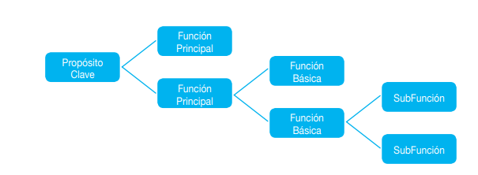

Es una técnica que se utiliza para identificar las competencias laborales inherentes a una función productiva. Tal función puede estar definida a nivel de un sector ocupacional, una empresa, un grupo de empresas o todo un sector de la producción o los servicios.
El análisis funcional no es, en modo alguno, un método exacto. Es un enfoque de trabajo para acercarse a las competencias requeridas mediante una estrategia deductiva. Se inicia estableciendo el propósito principal de la función productiva o de servicios bajo análisis y se pregunta sucesivamente qué funciones hay que llevar a cabo para permitir que la función precedente se logre.
En resumen, podemos decir que el Análisis Funcional:
- Es un instrumento utilizado para garantizar que los estándares de competencia estén bien elaborados, sean claros y comparables.
- Es una forma coherente y sistemática de llegar a describir un perfil ocupacional por competencias.
- Es un enfoque, no es un método científico.
- Es un instrumento de cuestionamiento y análisis.
- Requiere habilidad de los participantes para entender el concepto de la competencia. Es un proceso paso a paso.
- No se trata de una formula por lo cual requiere comprensión de su enfoque metodológico.
- No suministra automáticamente respuestas correctas y precisas, pero da información útil para evaluar cuál sería la respuesta adecuada.
- Busca lograr un resultado consistente.
- Su valor como herramienta parte de su representatividad. Es ideal realizarlo con un grupo de trabajadores que conozcan la función analizada.
EL ANÁLISIS FUNCIONAL DEBE ELABORARSE RESPETANDO UN FORMATO DE REDACCIÓN
En su elaboración se siguen ciertas reglas encaminadas a mantener uniformidad de criterios. La redacción del propósito principal, propósito clave, o función clave de la empresa, se suele elaborar siguiendo la estructura:
VERBO + OBJETO + CONDICION
El verbo describe la acción que la función efectúa sobre el objeto, describiendo luego la condición bajo la cual tal acción ocurre.
Ejemplos:
Crear, suministrar y divulgar, producciones electrónicas de radio, cine y tv, para el público en general y especifico.
1. Iniciar estableciendo la declaración del propósito clave o función principal:
Es una afirmación, implica algo que debe suceder, no es personalizada y Entre más claro sea el propósito clave más ayudara a avanzar.
2. Elaborar las funciones principales:
Las funciones principales constituyen el primer nivel de desagregación y deben cumplir con la premisa de mantener una relación causa-efecto, es decir ayudar al logro del propósito clave
OPERACIONAL/TÉCNICO:
Funciones o roles propios del ciclo de trabajo de la ocupación.
ESTRATÉGICO:
Tiene que ver con la planificación, la anticipación.
INNOVADOR:
Incorpora la visión a futuro, las posibles tendencias que afecten la ocupación.
3. Desagregar las funciones principales en funciones básicas:
Es el segundo nivel de desagregación y se desarrolla con la misma lógica del nivel anterior.
Puede suceder que una función que inicialmente estaba en segundo nivel ahora resulte en un nivel inferior. Este reacomodamiento puede ser necesario y eventualmente aclara más el mapa funcional.
4. Desagregar las funciones básicas en subfunciones.
Es el cuarto nivel de desagregación.
Cada función cumple un propósito mutuamente excluyente y pleno.
No debe por tanto repetirse funciones. Una función aparece una sola vez en el mapa
En resumen las funciones principales, básicas y subfunciones:
Se redactan en el estilo verbo – objeto – condición
Deben integrarse perfectamente con la función precedente.
Se revisan constantemente a lo largo del ejercicio.
Pueden integrarse (desde función básica) con la frase: “el trabajador debería ser capaz de...”.
El propósito de un mapa funcional es servir de punto de partida para el desarrollo de estándares de competencia, en esa medida brindan un marco que permite agregar luego los detalles del estándar.

Una vez elaborado el mapa funcional se obtendrá una descripción de la jerarquía de resultados que permiten alcanzar el propósito clave del sector (también puede darse a nivel de empresa u ocupación). Cuando el mapa haya descrito a un buen nivel de satisfacción las funciones hasta el último nivel de desagregación, se procede a estructurar las unidades y elementos de competencia.
Normalmente las unidades empiezan a aparecer al nivel en el que funciones definidas se podrían obtener con el trabajo de una persona. Esto se puede comprobar en la medida que a la función se le pueda interponer la frase: “el trabajador podrá....” (Usualmente depende del grado de amplitud del mapa).